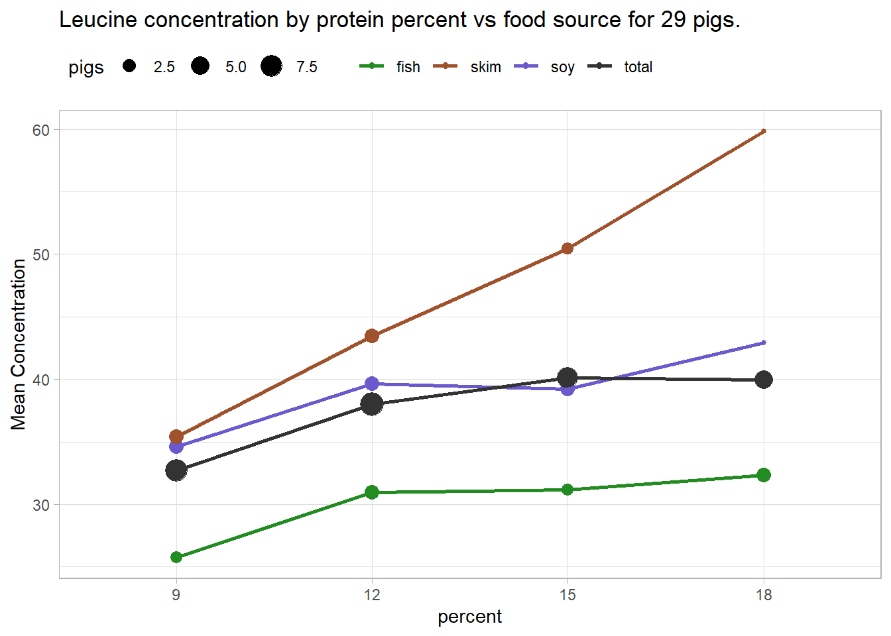
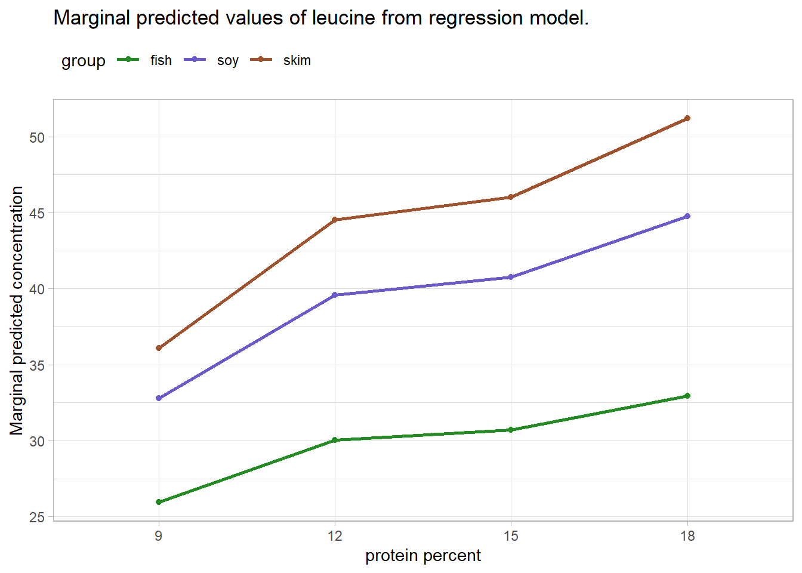

data(pigs, package = "emmeans")
pigs <- pigs %>% mutate(percent = factor(percent))9 Estimated Marginal Means
Estimated marginal means (EMMs) are the marginal means of the predicted values from a reference grid. Data set pigs is an observational study of the leucine concentration (conc) in 29 pigs whose diets differed in two attributes: source (fish, soy, milk) and protein percent (9, 12, 15, 18).
A plot of the data shows concentration increases varies by source, and increases with protein percent.
Show the code
bind_rows(
pigs |> summarize(.by = c(source, percent), M = mean(conc), n = n()),
pigs |> mutate(source = "total") |>
summarize(.by = c(source, percent), M = mean(conc), n = n())
) |>
ggplot(aes(x = percent, y = M, color = source)) +
geom_point(aes(size = n)) +
geom_line(aes(group = source), linewidth = 1) +
labs(
color = NULL, y = "Mean Concentration", size = "pigs",
title = "Leucine concentration by protein percent vs food source for 29 pigs."
) +
scale_color_manual(values = emm_pal) +
theme(legend.position = "top", legend.justification = "left")
This is an instance of Simpson’s paradox: concentration increases with percent for each source, but decreases at percent 18 when not grouping. The culprit is the over-weighted fish group (n = 3) at percent 18.
9.1 Ordinary and Estimated Marginal Means
The “ordinary” marginal means (OMM) are just the conditional means of the data. The OMM monotonically increases until percent = 18.
pigs |> summarize(.by = percent, OMM = mean(conc)) percent OMM
1 9 32.70000
2 12 38.01111
3 15 40.12857
4 18 39.94000The estimated marginal means are the means of a model’s predicted values over some reference grid. Fit the inverse concentration (that’s the best linear relationship).
mdl <-
linear_reg() |>
fit(inverse(conc) ~ ., data = pigs) |>
extract_fit_engine()The reference grid is a grid of the model predictor variables. For factor vars, there’s a row for each level, and for continuous vars, there is a row for the mean. The manual way to calculate this is
RG <- expand.grid(source = levels(pigs$source), percent = levels(pigs$percent))
augment(mdl, newdata = RG) |>
summarize(.by = percent, EMM = 1 / mean(.fitted)) # A tibble: 4 × 2
percent EMM
<fct> <dbl>
1 9 31.0
2 12 37.0
3 15 38.1
4 18 41.5That’s what emmeans() does by default. This is like a weighted average so that groups with many observations are underweighted.
emmeans(mdl, "percent", type = "response") percent response SE df lower.CL upper.CL
9 31.0 0.993 23 29.1 33.2
12 37.0 1.330 23 34.5 40.0
15 38.1 1.600 23 35.0 41.7
18 41.5 2.310 23 37.3 46.9
Results are averaged over the levels of: source
Confidence level used: 0.95
Intervals are back-transformed from the inverse scale 9.2 ggeffects
The ggeffects package does a nice job working with EMMs.
mdl_2 <-
linear_reg() |>
fit(1/conc ~ ., data = pigs) |>
extract_fit_engine()
predict_response(mdl_2, terms = "percent", margin = "marginalmeans")# Predicted values of conc
percent | Predicted | 95% CI
----------------------------------
9 | 31.01 | 33.21, 29.08
12 | 37.03 | 40.00, 34.47
15 | 38.06 | 41.68, 35.01
18 | 41.53 | 46.92, 37.25You can pipe the responses right into ggplot.
Show the code
predict_response(mdl_2, terms = c("percent", "source")) |>
ggplot(aes(x = x, y = predicted, color = group)) +
geom_point(size = 1.5) +
geom_line(aes(group = group), size = 1) +
labs(
title = "Marginal predicted values of leucine from regression model.",
y = "Marginal predicted concentration", x = "protein percent"
) +
scale_color_manual(values = emm_pal) +
theme(legend.position = "top", legend.justification = "left")
9.3 Nusisance Variables
Suppose you have a model with several predictors and want to estimate the marginal means for a factor. Let’s create a dataset to estimate the effect of sex on salary. By construction, salary is a function only of career level, but, 2/3 of entry-level employees are female, and only 2/5 of senior-level employees are female. Our EMM analysis should convey this. We’ll throw in age just to have a continuous variable in model.
set.seed(123)
sal_dat <- tibble(
salary = c(rnorm(30, 30e3, 2e3), rnorm(15, 50e3, 3e3), rnorm(5, 100e3, 5e3)),
car_level = c(rep("Entry", 30), rep("Mid", 15), rep("Senior", 5)),
sex = c(rep("F",20), rep("M",10), rep("F",8), rep("M",7), rep("F",2), rep("M",3)),
age = c(rnorm(30, 25, 2), rnorm(15, 40, 2), rnorm(5, 55, 2))
)
sal_fit <-
linear_reg() |>
fit(salary ~ car_level + sex + age, data = sal_dat) |>
extract_fit_engine()
sal_fit |> tidy()# A tibble: 5 × 5
term estimate std.error statistic p.value
<chr> <dbl> <dbl> <dbl> <dbl>
1 (Intercept) 33769. 4860. 6.95 1.22e- 8
2 car_levelMid 23363. 3132. 7.46 2.13e- 9
3 car_levelSenior 73451. 6044. 12.2 8.23e-16
4 sexM -709. 699. -1.01 3.16e- 1
5 age -145. 192. -0.756 4.53e- 1As designed, sex and age are insignificant while car_level is significant and a large. Let’s calculate the EMMs for sex.
Show the code
(sal_emm_1 <- emmeans(sal_fit, specs = "sex")) sex emmean SE df lower.CL upper.CL
F 61281 1630 45 58007 64555
M 60572 1520 45 57509 63634
Results are averaged over the levels of: car_level
Confidence level used: 0.95 emmeans() averaged the predicted values from the default reference grid. The grid is the combination of factor levels and means of continuous variables.
Show the code
ref_grid(sal_fit) |> tidy()# A tibble: 6 × 8
car_level sex age estimate std.error df statistic p.value
<chr> <chr> <dbl> <dbl> <dbl> <dbl> <dbl> <dbl>
1 Entry F 32.8 29009. 1535. 45 18.9 5.02e-23
2 Mid F 32.8 52372. 1726. 45 30.3 1.33e-31
3 Senior F 32.8 102460. 4617. 45 22.2 7.15e-26
4 Entry M 32.8 28300. 1699. 45 16.7 7.31e-21
5 Mid M 32.8 51663. 1624. 45 31.8 1.73e-32
6 Senior M 32.8 101752. 4487. 45 22.7 2.94e-26The EMM for sex=F ($61,281) is the average of the three sex=F salaries in the reference grid. From here, you can use contrast() to say females get paid a premium of $354 and men get paid $354 less (although neither result is significant).
Show the code
emmeans::contrast(sal_emm_1) contrast estimate SE df t.ratio p.value
F effect 354 349 45 1.015 0.3157
M effect -354 349 45 -1.015 0.3157
Results are averaged over the levels of: car_level
P value adjustment: fdr method for 2 tests $354 more (less) than what though? Well, it’s $354 less than whatever predicted value you would have at any career level (at the average age). A nice reference point is the “mediod” employee - the employee who is a proportional mixture of all career levels and all sexes. Not the proportional mixture of the combinations (women are entry-level, men senior-level), but just the proportional mixture of all variables taken independently. The way to do that is by reducing “nuisance” factor levels into a single set. Instead of car_levelEntry = [0,1], we let it, and each other level, have a continuous range, with the sum across levels adding to 1. The values could be equal, but far better for them to be prortional - .6 for entry-level, .3 for mid-level, and .1 for senior.
Show the code
(nuis_grid <- ref_grid(sal_fit, nuisance = "car_level", wt.nuis = "proportional"))'emmGrid' object with variables:
sex = F, M
age = 32.793
Nuisance factors that have been collapsed by averaging:
car_level(3)Now let’s see the EMMs and contrast.
Show the code
(sal_emm_2 <- emmeans(nuis_grid, specs = "sex")) sex emmean SE df lower.CL upper.CL
F 43363 433 45 42490 44236
M 42654 534 45 41578 43730
Results are averaged over the levels of: 1 nuisance factors
Confidence level used: 0.95 Those are more realistic marginal means. The contrast is still the same.
Show the code
contrast(sal_emm_2) contrast estimate SE df t.ratio p.value
F effect 354 349 45 1.015 0.3157
M effect -354 349 45 -1.015 0.3157
Results are averaged over the levels of: 1 nuisance factors
P value adjustment: fdr method for 2 tests But now the reference point is the “mediod” employee.
Show the code
emmeans(nuis_grid, specs = ~1) 1 emmean SE df lower.CL upper.CL
overall 43009 338 45 42327 43691
Results are averaged over the levels of: 1 nuisance factors, sex
Confidence level used: 0.95 Finally, how about this slick way to show EMMs? We’ll show the reference point, then all factor levels. (Code below pretends .5 is a significant level, just so I can show the color contrast.)
Show the code
contrast_color <- function(bg) {
if_else(colorspace::contrast_ratio(bg, "black") >
colorspace::contrast_ratio(bg, "white"),
"black", "white")
}
smry <-
bind_rows(
emmeans(sal_emm_2, specs = ~1) |> tidy() |> rename(contrast = `1`),
contrast(sal_emm_2) |> tidy()
) |>
select(contrast, estimate, adj.p.value) |>
mutate(contrast = fct_relevel(contrast, "overall", after = 0)) |>
arrange(contrast) |>
mutate(
pct = estimate / first(estimate),
bg = case_when(
adj.p.value < .50 & estimate < 0 ~ "firebrick",
adj.p.value < .50 & estimate > 0 ~ "dodgerblue",
TRUE ~ "white"
),
color = contrast_color(bg)
)
smry |>
select(contrast, estimate) |>
mutate(contrast = str_remove(contrast, " effect")) |>
pivot_wider(names_from = contrast, values_from = estimate) |>
gt::gt() |>
gt::fmt_currency(decimals = 0) |>
gt::tab_spanner("Effect", columns = 2:3) |>
gt::tab_header(title = "Effect of gender on estimated marginal means.") |>
gt::tab_options(heading.align = "left") |>
gt::tab_style(
style = gt::cell_fill("firebrick"),
locations = gt::cells_body(columns = which(smry$bg == "firebrick"))
) |>
gt::tab_style(
style = gt::cell_fill("dodgerblue"),
locations = gt::cells_body(columns = which(smry$bg == "dodgerblue"))
) |>
gt::tab_style(
style = gt::cell_text("white"),
locations = gt::cells_body(columns = which(smry$color == "white"))
) |>
gt::tab_style(
style = gt::cell_text("black"),
locations = gt::cells_body(columns = which(smry$color == "black"))
)| Effect of gender on estimated marginal means. | ||
|---|---|---|
| overall |
Effect
|
|
| F | M | |
| $43,009 | $354 | −$354 |
9.4 Learn More
This Very statisticious blog post is helpful. I also worked through the emmeans vignettes on CRAN and ggeffects on GitHub.